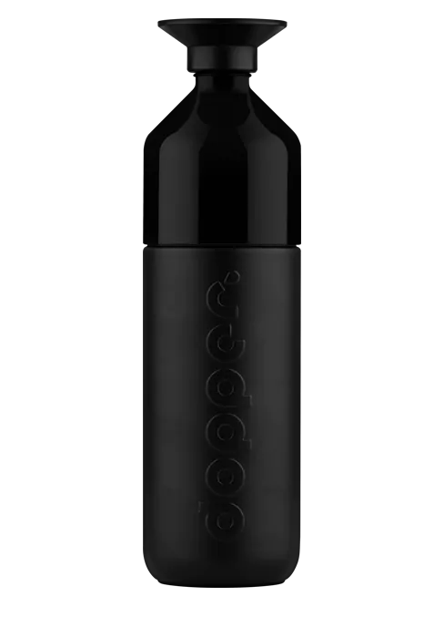

Dopper website

Dopper Insulated (1L) - Blazing Black
€ 44,95
 In winkelmand PersonaliserenDeze zwarte thermosfles houdt je water 9 uur warm of 24 uur koud.
class krasvast en dubbelwandig vacuüm geïsoleerd.
Cradle to Cradle Certified® (Bronze). Wil je iemand verrassen? Schrijf hieronder een persoonlijke boodschap. Mobiele gebruikers: tik op het icoon naast ’in winkelmand'.